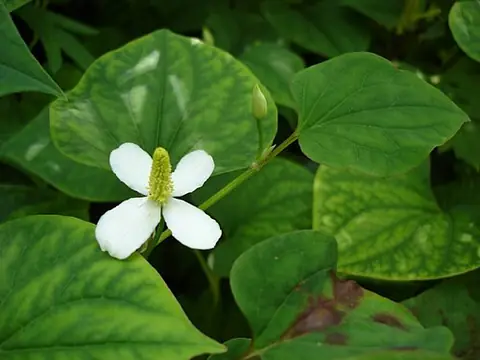

Wild green · Mar–Jul
Fishwort
Houttuynia cordata
Also called Ja mardoh, Toningkhok, Masundari
Fishwort is a wild green you can forage from March to July in Northeast. Heart-shaped leaves with a strong fishy-citrus smell, in wet shady ground across the Northeast.

When is fishwort in season in India?
Fishwort is usually in season March to July. Timing shifts with weather, latitude and altitude.
Where does fishwort grow in India?
Fishwort grows in Arunachal Pradesh, Assam, Manipur, Meghalaya, Mizoram, Nagaland, Sikkim, Tripura. Regions: Northeast.
How do you recognise fishwort?
Heart-shaped leaves with a strong fishy-citrus smell, in wet shady ground across the Northeast.
How do you harvest fishwort?
Pinch off the young tips and top leaves with your fingers or scissors. Leave the lower leaves and roots so the plant regrows. Pick in the morning, away from roads and drains.
How do you eat fishwort?
Raw in salads and chutneys with fermented fish or pork.
How do you store fishwort?
Use fresh.
What can you cook with fishwort?
- Singju: Manipuri salad of sliced tree bean, wild herbs and cabbage, dressed with roasted chilli and perilla.